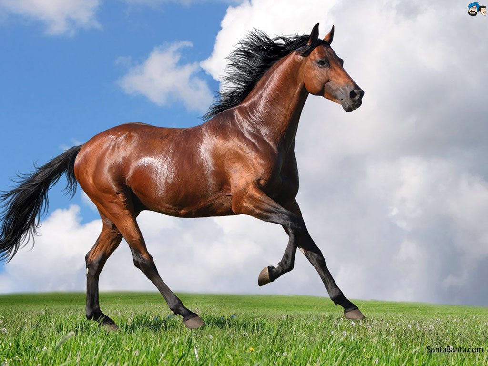

Horses! :)
Did you know horses and humans have an ancient relationship? Asian nomads probably domesticated the first horses some 4,000 years ago, and the animals remained essential to many human societies until the advent of the engine. Horses still hold a place of honor in many cultures, often linked to heroic exploits in war. There is only one species of domestic horse, but around 400 different breeds that specialize in everything from pulling wagons to racing. All horses are grazers. While most horses are domestic, others remain wild. Feral horses are the descendents of once-tame animals that have run free for generations. Groups of such horses can be found in many places around the world. Free-roaming North American mustangs, for example, are the descendents of horses brought by Europeans more than 400 years ago. Wild horses generally gather in groups of 3 to 20 animals. A stallion (mature male) leads the group, which consists of mares (females) and young foals. When young males become colts, at around two years of age, the stallion drives them away. The colts then roam with other young males until they can gather their own band of females. The Przewalski's horse is the only truly wild horse whose ancestors were never domesticated. Ironically, this stocky, sturdy animal exists today only in captivity. The last wild Przewalski's horse was seen in Mongolia in 1968.
go to page 2